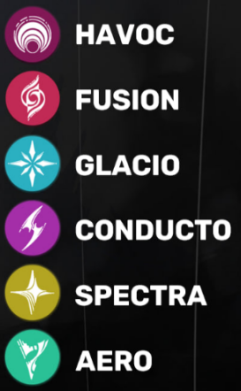
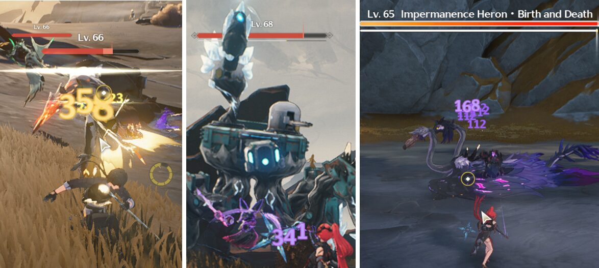
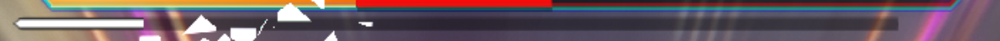

How To Play
Welcome to Wuthering Waves
Wuthering Waves is set in a futuristic post-apocalyptic world after a cataclysm called the Lament has wiped out most of humanity and given rise to unknown creatures and monsters called Tacet Discords. However, humanity quickly adapts to the threat and over time rebuilds civilization. The story follows an amnesiac Rover who awakens from his deep sleep and sets out to explore this new world.
General Guide
What to do first in Wuthering Waves?
Movement The main features of this system are:
- Sprint doesn’t consume stamina outside of combat
- You have a grapple that covers medium-tall distance (consumes stamina)
- Mid-air jump (consumes stamina and resets once you touch the ground)
- Wall-running (depletes more stamina but lets you climb faster)
- More control over your movement while sliding off an incline
- While wall-running, if you hit a roof ledge, your character may grab from it and lift themselves above it.
- When you stop gliding, if you hold any movement input (WASD) you’ll still move towards that direction as you fall. You can also stop at any time.
- The Gadget Menu can slow-time as you pick a tool
Exploration
As for exploration, everything is divided in zones and %s for each one, increasing based on chests and puzzles you complete. Your progress will reward you points every 20% up to 80% per zone at the Pioneer Association. After reaching a certain amount of points, you’ll unlock new gadgets and recipes that will help your exploration and speed things up in other regions
Relics
While exploring, you might find Sonance Caskets. They are collectables you can find around each nation. You’ll hand them over to an NPC per nation and after every set amount of them, you’ll rank up and gain rewards. These rewards contain Resonance Chains for your Rover (Main Character).
Combat
Characters, also known as Resonators, hold an attribute, while the Main Character “Rover” can hold
all
elements.
Characters don’t deal “Physical damage”, instead they do their elemental damage in all attacks
except
Echo Skills. We’ll cover Echoes later.
As for attributes there are:

Enemies
Enemies are divided into 3 types: Common, Elite and Overlord/Calamity-class. Each one contains a different and more proactive moveset, some small even use special abilities that help other common enemies. There are pure-elemental enemies that are immune to their element while some are more resistant to their own element. This resistance system also applies to bosses.
Enemies’ Stagger and Vibration Strength
Elite and Overlord-class have a STAGGER meter, this is called Vibration Strength. Once depleted, the enemy will be Immobilized and open to all attacks. By dealing Vibration Damage through Heavy Attacks, certain Skills and/or Counter attacking their flawed attacks, you can deplete this meter faster. Once depleted, you’ll have a set amount of time for damage until the enemy fully recovers. This is VERY important for the endgame as well as knowing when can characters parry flawed attacks. Note: Parrying does NOT deal additional damage, deals increased vibration damage proportional to their vibration strength.
Characters Tierlist
here i will give you a tierlist containing the best/the suitable character for a dps, hybrid, and a support
| tier | DPS | hybrid | Support |
|---|---|---|---|
 |
jinshi sanhua (s6) |
yinlin zhezhi |
shore keeper verina |
 |
chang li encore jiyan xiangli yao |
sanhua mortefei |
|
 |
rover (havoc) |
baizhi |
|
 |
.webp)
chalcaro danjin |
yuan wu |
jianxin |
 |
chixia ling yang |
.webp)
Rover (spectro) |
yang yang |